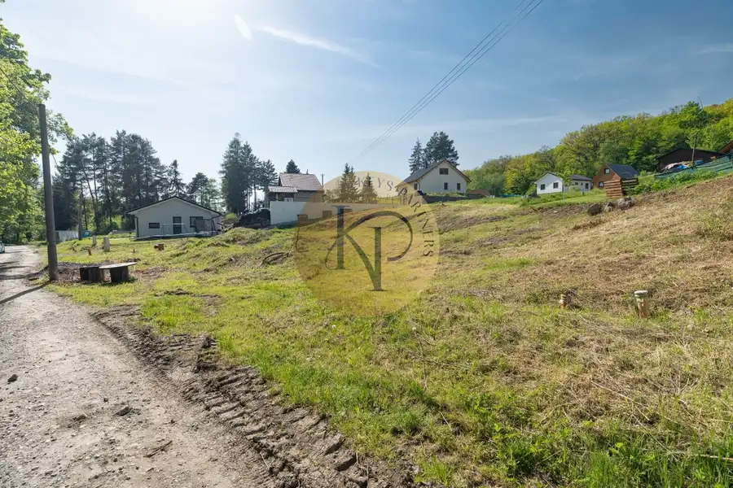
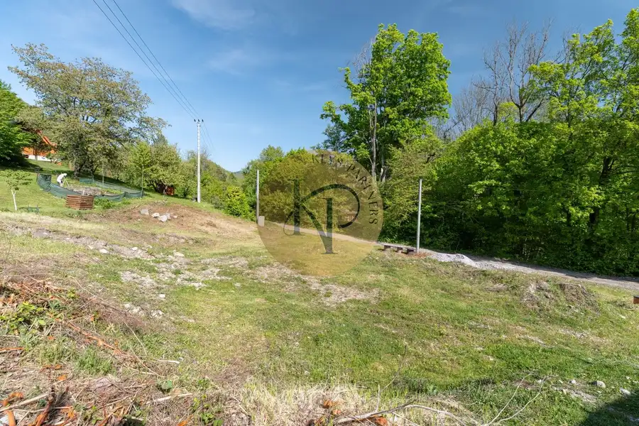
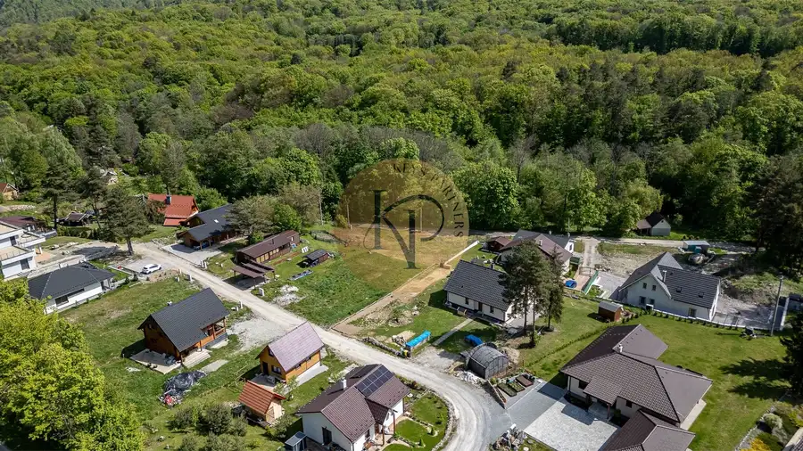
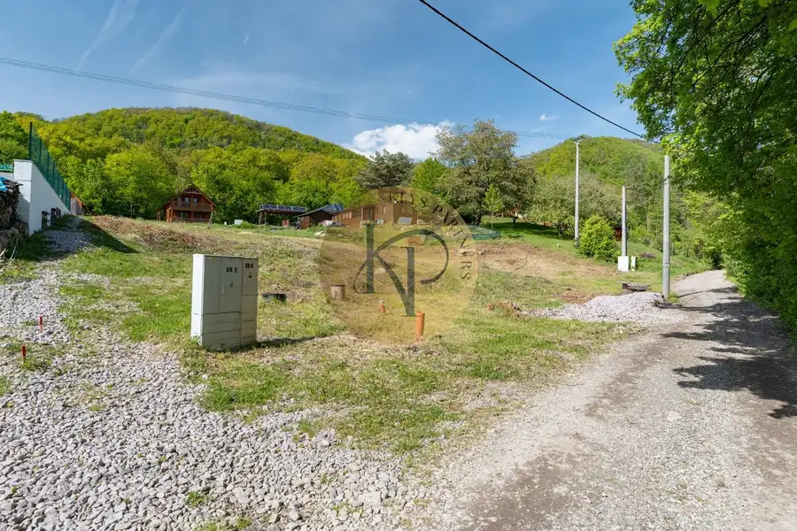

NA PREDAJ_Pozemok P1 a P2 Kokošovce časť Sigord
Kokošovce




- Plocha450 m²
- VlastníctvoOsobné
O nehnuteľnosti
NA PREDAJ_Pozemok P1 a P2 na južnej strane Slánskych Vrchov v obci Kokošovce SigordDivízia BROKERAGE REAL ESTATE spoločnosti Keys Partners, a.s. v zastúpení nášho Klienta Vám v portfóliu ponúka na PREDAJ pozemok P1 a P2 v obci Kokošovce časť Sigord Pozemky, ktoré sa nachádzajú v chatovej oblasti Sigord v lone Slanských Vrchov v blízkosti vodnej nádrže v doline potoka Delňa v časti s rozprávkovým názvom Pod Kamenným Jarkom majú rozmery 450 m2 a 447 m2. Slnečný s mierne svahovitým členením dokáže naplniť aj najnáročnejšie priania tých, ktorí presne vedia do detailov, ako ma vyzerať ich budúce vysnívané bývanie v prípade výstavby Chaty s prvkami RD a celoročným užívaním. Pokoj počas noci, krásne rána keď vás prebúdza štebot vtákov, krásne prežité slnečné dni priamo v lese, prechádzky vo dvojici v prírode, v zimnom období jemný mrázik ,pohľad z okna keď sneží a srnka prebehne okolo, posedenie pri piecke a horúcom čaji. To je len pár lákadiel pre pokoj v duši ,pohodu a rodinnú atmosféru. Priamo na pozemkoch sa nachádzajú IS, t.j. elektrina (230 a 400 V), obecný vodovod, cestný dažďový zvod. Obec Kokošovce časť Sigord leží približne 10 km od tretieho najväčšieho krajského mesta Prešov . Z Prešova vedie cyklochodník až na Sigord. V obci sa nachádza pošta, MŠ, futbalové ihrisko, k dispozícii sú potraviny a pizzerie. V časti Sigord sa nachádza vodná nádrž kde je možnosť člnkovania, kúpania a rybárčenia. S detmi možnosť prežitia krásnych letných dní na kúpalisku, možnosť turistiky na Šimonke návšteva Dubnických Opálových Baní. Čarokrásne v zime zamrznuté jazero a Vianočné korčuľovanie na ľade.Predajná cena vrátane sprostredkovateľskej provízie: 63 €/m2 pozemku. Bližšie informácie, ako je výška Sprostredkovateľskej provízie budú určené na osobnej obhliadke Nehnuteľnosti, respektíve na vyžiadanie u Realitného makléraV sprostredkovateľskej provízií sú zahrnuté tieto služby:- kúpne zmluvy riešenie formou autorizovanej advokátskej spoločnosti,- návrh na vklad vlastníckeho práva do katastra nehnuteľnosti,- poplatok za klasický vklad do katastra Nehnuteľnosti,- protokolárne odovzdanie Nehnuteľnosti.V prípade záujmu o výstavbu Chaty s prvkami RD a celoročným užívaním Vám vieme poskytnúť náš tím profesionálov - Architekt, jednotliví profesisti, stavebný dozor, stavbári...Vlastník si vyhradzuje a ponecháva právo predaja najvýhodnejšej ponuke formou Aukcie.V prípade záujmu o bližšie informácie respektíve o obhliadku Nehnuteľnosti kontaktujte nášho Realitného makléra.Realitný maklér, Vzťahový riaditeľ spoločnosti Keys Partners, a.s. : Meno a priezvisko: Peter DUDA Telefonický kontakt: +421 907 441 405 E-mailový kontakt: peter_duda@keyspartners.sk ID obchodného prípadu: 09 08 77 00 09
Parametre
- Druh
- Rekreačný pozemok
- Dátum zverejnenia
- 17. 11. 2024
- Elektrina
- Na pozemku - 230 V, Na pozemku - 400 V
- Odpadové vody
- Nedostupné
- Plocha pozemku
- 450 m²
- Plyn
- Nedostupné
- Pripravenosť k výstavbe
- Schválené v územnom pláne
- Terén pozemku
- Mierne svahovitý
- Typ
- Predaj
- Vlastníctvo
- Osobné
- Voda
- Na pozemku - Diaľkový vodovod
- Územie
- Extravilán